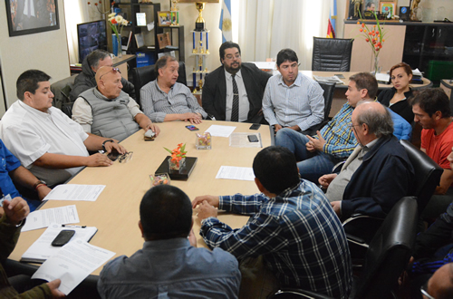

Real Chubut - Agencia de Noticias


Linares y CGT anunciaron que mañana trabajarán juntos por COMODORO

En el marco de una conferencia de prensa que realizó el intendente municipal, Carlos Linares junto al secretario general de la CGT “Saúl Ubaldini”, Gustavo Fita y referentes de los principales gremios locales, se anunció a toda la comunidad, que el día jueves 6 de abril van a trabajar todos unidos para recuperar Comodoro. En ese marco, el jefe de la ciudad, elogió el compromiso de todos los sindicatos que “desde el primer momento están con el Municipio luchando por sostener a las familias comodorenses y que hoy lo demuestran más que nunca”.
En su discurso, el jefe de la ciudad aseguró que esta decisión no lo sorprende porque desde el primer momento, contamos con la ayuda y la solidaridad de todos los referentes y afilados de los gremios de la ciudad y que sin lugar a dudas, “gracias a ellos, el 75 por ciento de la ciudad tiene agua y el 95 por ciento tiene luz. Ellos, que muchas veces son bastardeados, exponen sus vidas y dejan a sus familias, para que la ciudad no colapse y podamos seguir sosteniendo a los más perjudicados”.
“Ante todo quiero agradecer el acompañamiento que hemos tenido de la parte de los trabajadores, en representación de sus secretarios generales. Entiendo que el paro que se había anunciado para el día de mañana es justamente en defensa de los puestos laborales, no es un paro político, es una medida necesaria para decir que hay algo que está mal y les está afectando a los trabajadores; pero sin lugar a dudas, una vez más con esta decisión qe hoy anuncian, nos demuestran su solidaridad”, dijo.
Linares elogió “el gran aporte del sindicato de la UOCRA, por la cantidad de máquinas que le facilitaron al Municipio para limpiar la ciudad en estos últimos días; así como también, al sindicato de Luz y Fuerza, que trabajaron incansablemente para que no falte el agua y electricidad en los hogares. La verdad que la gente de la Sociedad Cooperativa realizó un trabajo mancomunado, increíble”.
“Mañana todos vamos a trabajar”
Por su parte, el secretario general de la CGT “Saúl Ubaldini”, Gustavo Fita, dijo que “vamos a trabajar más que nunca para reconstruir nuestra ciudad. Todos los que estamos hoy acá, tuvimos que afrontar situaciones difíciles en estos últimos días acompañando compañeros que perdieron todo, porque lo que nos pasó, fue realmente una catástrofe. Por eso mismo, mañana todos vamos a trabajar”.
“El conjunto de la Confederación General de Trabajo, tanto nacional como Saúl Ubaldini, decidió seguir acompañando a la ciudad y vamos a tratar de trabajar todos mañana para poder reconstruir Comodoro. Obviamente vamos a seguir apoyando a Carlos –Linares- con este trabajo que se viene haciendo porque es por nuestra gente”, explicó.
Fita dijo que “desde nuestro lugar, vamos a seguir reclamando lo que creemos justo y que se corten con los despidos de una vez, pero en esta oportunidad, vamos a seguir acompañando las acciones que lleva adelante el intendente de la ciudad”.
PUBLICIDAD